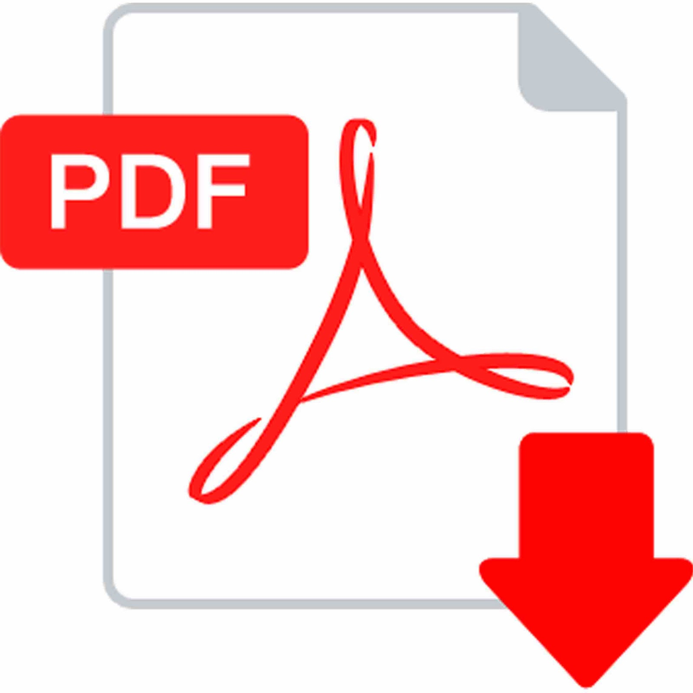

..:: INTRODUCCION ::..
Estimado estudiante, la Universidad Nacional Abierta y a Distancia le da la bienvenida al curso de Diseño de Sitios Web. En esta sección encontrará los conceptos básicos y la introducción al fabuloso mundo del Diseño Web.
La cultura Web está presente en nuestra vida diaria. Cualquier persona, sabe o ha oído hablar de lo que es un sitio web. Un sitio web es un conjunto de páginas web agrupadas bajo un dominio y que comparten una dirección en la Web. Hoy por hoy, muchos son los sitios web que se pueden encontrar en Internet.
Este video presenta los conceptos básicos de desarrollo web. Te invitamos a verlo.
En los siguientes link encontrará dos documento PDF con información sobre planificación de interfaces y uso de estilos. Además, dos audios con explicación sencilla y básica sobre HTML5 y CSS3.
